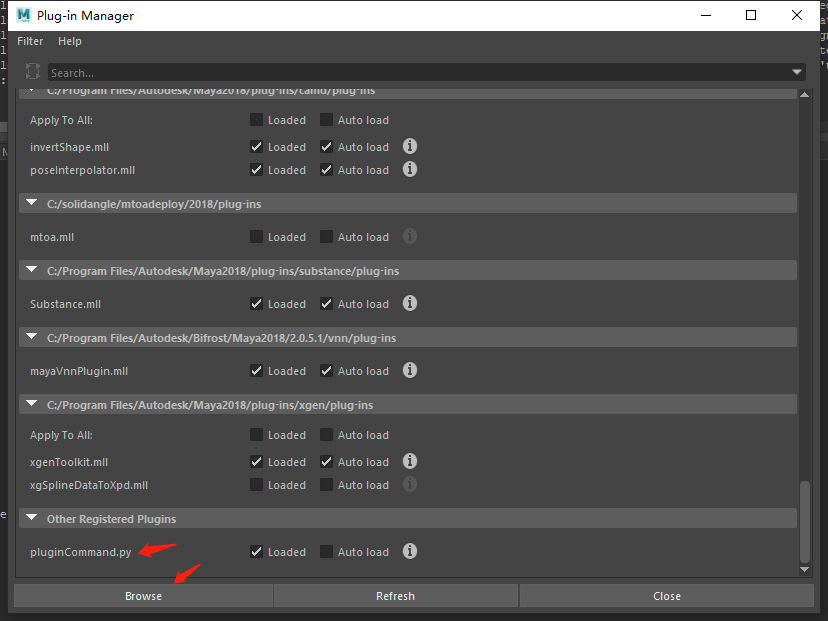

003-简单的命令插件#
"""
initializePlugin()和uninitializePlugin()必须存在于所有插件中。如果两者或其中一个都不存在，则不会加载插件，
并且需要创建者允许 Maya 创建类的实例
initializePlugin()函数可以定义为 C 或 C++ 函数。如果不定义该函数，插件将不会被加载；
该函数包含将插件定义的任何命令、工具、设备等注册到 Maya 的代码。它只被调用一次——在插件加载后立即调用
例如
命令和工具是通过实例化一个MFnPlugin功能设置在MObject通过，这个MObject包含 Maya私有信息，
例如插件文件的名称和加载它的目录。它被传递到MFnPlugin构造函数，以及供应商名称，如果未指定，
则默认为“未知”，插件的版本号为字符串，默认为“1.0”，以及插件正常运行所需的 API 版本，默认为“任意”
MFnPlugin函数集用于注册插件文件的内容。在以下示例MFnPlugin::registerCommand()被调用来注册“pluginCommand”命令，
以及该命令的创建。完成后，该函数返回一个状态码，指示它是否成功；初始化失败后，插件会自动卸载
uninitializePlugin()可以是 C 或 C++ 函数。如果您忽略声明此函数，您的插件将不会被加载；该函数包含从 Maya 取消注册所需的代码initializePlugin()，
它只被调用一次则当插件被卸载时
此功能应该用于一些快速清理操作，例如关闭文件。不必在插件退出时删除这些命令或插件创建的节点，因为 Maya 会处理它们。
因此，不应保留插件分配的 Maya 对象列表，也不应在called情况下释放它们uninitializePlugin()
"""
# Save file：D:/pluginCommand.py
import sys
import maya.OpenMaya as om
import maya.OpenMayaMPx as mpx
import maya.cmds as cmds
# 插件的名称
commandName = "pluginCommand"
# 继承命令的类
class pluginCommand(mpx.MPxCommand):
def __init__(self):
super(pluginCommand,self).__init__()
# 命令执行函数,doIt的该类固定的标准函数名称，argList则是命令的传参
def doIt(self,argList):
print("....doIt....")
# 获取命令的指针
def cmdCreate():
return mpx.asMPxPtr(pluginCommand())
# 注册插件函数，initializePlugin是注册maya插件的固定标准函数，必须的注册插件函数
def initializePlugin(mobject):
mplugin = mpx.MFnPlugin(mobject)
try:
# 注册插件，需要插件名称和插件指针
mplugin.registerCommand(commandName, cmdCreate)
except:
sys.stderr.write("Failed to register command: %s" % (commandName))
# 卸载插件函数，uninitializePlugin是卸载maya插件的固定标准函数
def uninitializePlugin(mobject):
mplugin = mpx.MFnPlugin(mobject)
try:
# 卸载插件
mplugin.deregisterCommand(commandName)
except:
sys.stderr.write("Failed to deregister command: %s" % (commandName))
直接在maya的插件管理器加载即可，或者用cmds的命令去加载也可以
import maya.cmds as cmds
cmds.loadPlugin(r"D:\pluginCommand.py")
